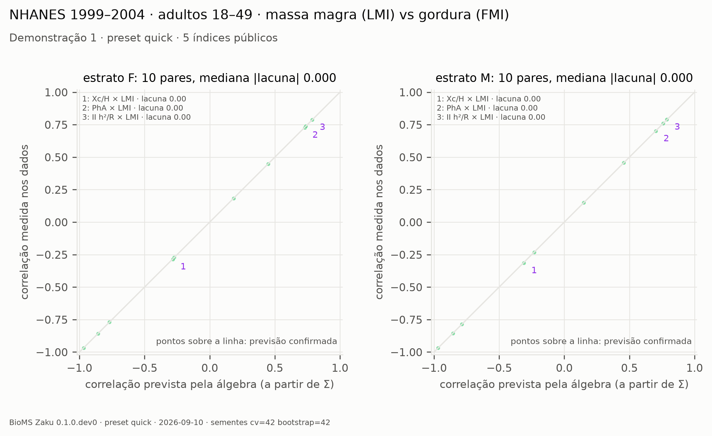

An algebraic and predictive framework for indices and predictive equations built from measured variables. Demonstrated on bioimpedance; applicable to any positive measurements with a labelled outcome.Un marco algebraico y predictivo para índices y ecuaciones predictivas construidos a partir de variables medidas. Demostrado en bioimpedancia; aplicable a cualquier medida positiva con un desenlace rotulado.Um framework algébrico e preditivo para índices e equações preditivas construídos a partir de variáveis medidas. Demonstrado em bioimpedância; aplicável a quaisquer medidas positivas com um desfecho rotulado.
Indices are usually validated by correlating each one, in isolation, with a reference criterion. That leaves open:Los índices suelen validarse correlacionando cada uno, aislado, con un criterio de referencia. Eso deja abierto:Índices costumam ser validados correlacionando cada um, isolado, com um critério de referência. Isso deixa em aberto:
Indices built from the same variables are algebraically related. Their mutual correlation is predictable from the covariance of the variables — before any index is computed.Índices construidos con las mismas variables están relacionados algebraicamente. Su correlación mutua es predecible desde la covarianza de las variables, antes de calcular índice alguno.Índices construídos com as mesmas variáveis são algebricamente relacionados. A correlação entre eles é previsível a partir da covariância das variáveis, antes de calcular qualquer índice.
A high correlation with lean mass is compatible with an index that tracks body size. Correlation with one criterion cannot separate specific signal from confounding.Una correlación alta con la masa magra es compatible con un índice que sigue el tamaño corporal. La correlación con un criterio no separa señal específica de confusión.Uma correlação alta com massa magra é compatível com um índice que acompanha o tamanho corporal. Correlação com um critério não separa sinal específico de confundimento.
Equations derived in one population drift in another and are re-fitted with correction factors. The drift depends on how the variables co-vary in each population.Ecuaciones derivadas en una población derivan en otra y se reajustan con factores de corrección. La deriva depende de cómo covarían las variables en cada población.Equações derivadas numa população derivam em outra e são reajustadas com fatores de correção. A deriva depende de como as variáveis covariam em cada população.
One flow, two operations, the same test for every problem.Un flujo, dos operaciones, la misma prueba para cada problema.Um fluxo, duas operações, o mesmo teste para qualquer problema.
Written as a product of powers of the variables, an index is its vector of exponents. With Σ, the correlation between two indices is an identity: aᵀΣb / √(aᵀΣa·bᵀΣb). Nearly parallel vectors are redundant; the earlier publication has precedence. Sum-type equations enter through a log-linear fit whose R² reports how closely they behave as products.Escrito como producto de potencias de las variables, un índice es su vector de exponentes. Con Σ, la correlación entre dos índices es una identidad: aᵀΣb / √(aᵀΣa·bᵀΣb). Vectores casi paralelos son redundantes; la publicación anterior tiene precedencia. Las ecuaciones aditivas entran por un ajuste log-lineal cuyo R² informa cuán bien se comportan como productos.Escrito como produto de potências das variáveis, um índice é o seu vetor de expoentes. Com Σ, a correlação entre dois índices é uma identidade: aᵀΣb / √(aᵀΣa·bᵀΣb). Vetores quase paralelos são redundantes; a publicação anterior tem precedência. Equações de soma entram por um ajuste log-linear cujo R² informa o quanto se comportam como produtos.

Each index is scored out of sample against a target and a negative control, with identical resamples on both sides. Specific: predicts the target, not the control. Tracks the control: predicts both, i.e. a confounder. Added value: gain over covariates. Verdicts follow fixed rules; the bootstrap P is descriptive, not a p-value.Cada índice se puntúa fuera de muestra contra un objetivo y un control negativo, con remuestras idénticas a ambos lados. Específico: predice el objetivo, no el control. Sigue el control: predice ambos, es decir, un confusor. Valor agregado: ganancia sobre covariables. Los veredictos siguen reglas fijas; la P del bootstrap es descriptiva, no un valor p.Cada índice é pontuado fora da amostra contra um alvo e um controle negativo, com reamostras idênticas dos dois lados. Específico: prediz o alvo, não o controle. Acompanha o controle: prediz os dois, ou seja, um confundidor. Valor acrescentado: ganho sobre covariáveis. Vereditos seguem regras fixas; o P do bootstrap é descritivo, não valor-p.

Fit the exponents to the target on a design partition (70:30 by default, within each stratum) and audit on the disjoint partition. Any positive measurement can join the variables — heart rate, force — and Σ grows accordingly. The framework refuses to design unless the user declares that the target is not computed from the mapped variables.Ajuste los exponentes al objetivo en una partición de diseño (70:30 por defecto, dentro de cada estrato) y audite en la partición disjunta. Cualquier medida positiva puede sumarse a las variables — frecuencia cardíaca, fuerza — y Σ crece en consecuencia. El marco no diseña sin la declaración de que el objetivo no se calcula desde las variables mapeadas.Ajuste os expoentes ao alvo numa partição de desenho (70:30 por padrão, dentro de cada estrato) e audite na partição disjunta. Qualquer medida positiva pode entrar nas variáveis — frequência cardíaca, força — e Σ cresce. O framework não desenha sem a declaração de que o alvo não é calculado a partir das variáveis mapeadas.

One row per person; positive measured variables; at least one target and one negative control.Una fila por persona; variables medidas positivas; al menos un objetivo y un control negativo.Uma linha por pessoa; variáveis medidas positivas; pelo menos um alvo e um controle negativo.
bioms-zaku init data.csvBuilds the configuration. Detects separator and decimal, asks which column is R, Xc, height, weight, target and control. Suggests by name only when unambiguous; never decides alone.Construye la configuración. Detecta separador y decimal, pregunta qué columna es R, Xc, estatura, peso, objetivo y control. Sugiere por nombre solo sin ambigüedad; nunca decide solo.Monta a configuração. Detecta separador e decimal, pergunta qual coluna é R, Xc, altura, peso, alvo e controle. Sugere pelo nome só quando não há ambiguidade; nunca decide sozinho.
bioms-zaku check data.zaku.yamlValidates without running: rows per stratum, classes, target–control pairing and collinearity, evaluable methods, bootstrap feasibility, the circularity declaration.Valida sin ejecutar: filas por estrato, clases, emparejamiento y colinealidad objetivo–control, métodos evaluables, viabilidad del bootstrap, declaración de circularidad.Valida sem rodar: linhas por estrato, classes, pareamento e colinearidade alvo–controle, métodos avaliáveis, viabilidade do bootstrap, declaração de circularidade.
bioms-zaku run data.zaku.yamlRuns the analysis and writes aggregate tables at full precision, a manifest with seeds, versions and SHA-256 of every input and output, a summary, the figures and a single-file report.html.Ejecuta el análisis y escribe tablas agregadas con precisión completa, un manifiesto con semillas, versiones y SHA-256 de cada entrada y salida, un resumen, las figuras y un report.html único.Roda a análise e grava tabelas agregadas com precisão completa, um manifesto com sementes, versões e SHA-256 de cada entrada e saída, um resumo, as figuras e um report.html único.
pip install bioms-zaku bioms-zaku init data.csv --map R=resistance Xc=reactance H=height W=weight target=lmi control=fmi independent=yes bioms-zaku check data.zaku.yaml bioms-zaku run data.zaku.yaml # preset article: 5×50 CV, 2000 paired resamples · preset quick: demonstrations only
| figure | what it showsqué muestrao que mostra |
|---|---|
| exponents | One row per method, one exponent per variable (blue positive, orange or violet negative). Similar rows carry the same information. “fit R²” tells how closely a sum-type equation behaves as a product; “fixed” means the vector is exact.Una fila por método, un exponente por variable. Filas parecidas llevan la misma información. “fit R²” indica cuán bien una ecuación aditiva se comporta como producto; “fijo” significa vector exacto.Uma linha por método, um expoente por variável. Linhas parecidas carregam a mesma informação. “fit R²” diz o quanto uma equação de soma se comporta como produto; “fixo” significa vetor exato. |
| predicted_observed | Each point is a pair of methods: correlation predicted by the algebra against the correlation measured in the data. Points on the line confirm the prediction; the three largest gaps are named.Cada punto es un par de métodos: correlación predicha por el álgebra contra la medida en los datos. Puntos sobre la línea confirman la predicción; las tres mayores brechas se nombran.Cada ponto é um par de métodos: correlação prevista pela álgebra contra a medida nos dados. Pontos sobre a linha confirmam a previsão; as três maiores lacunas são nomeadas. |
| scorecard | One row per method in publication order. Originality: original, or repeats a named earlier method. Specificity: specific, tracks the control, or inconclusive, with score(target) − score(control) and its 95 % interval. Added value: gain over covariates. † outside declared validity · * provenance not high.Una fila por método en orden de publicación. Originalidad: original, o repite un método anterior nombrado. Especificidad: específico, sigue el control, o no concluyente, con puntaje(objetivo) − puntaje(control) y su intervalo 95 %. Valor agregado: ganancia sobre covariables. † fuera de validez · * procedencia no alta.Uma linha por método em ordem de publicação. Originalidade: original, ou repete um método anterior nomeado. Especificidade: específico, acompanha o controle, ou inconclusivo, com escore(alvo) − escore(controle) e o intervalo 95 %. Valor acrescentado: ganho sobre covariáveis. † fora da validade · * procedência não alta. |
A measured outcome the index should not predict but a confounder would. For lean-mass indices, fat mass; for a clinical label, a label of the confounder (e.g. obesity). Declare it before running; the manifest records it. A permuted target gives the chance floor.Un desenlace medido que el índice no debería predecir pero un confusor sí. Para índices de masa magra, la masa grasa; para una etiqueta clínica, una etiqueta del confusor (p. ej. obesidad). Decláralo antes de ejecutar; el manifiesto lo registra. Un objetivo permutado da el piso del azar.Um desfecho medido que o índice não deveria predizer, mas um confundidor sim. Para índices de massa magra, a massa gorda; para um rótulo clínico, um rótulo do confundidor (por exemplo obesidade). Declare antes de rodar; o manifesto registra. Um alvo permutado dá o piso do acaso.
Five public bioimpedance indices, verified at the source: impedance index H²/R (Lukaski 1985), phase angle (Baumgartner 1988), R/H and Xc/H (Piccoli 1994), and LMI (Levi Micheli 2022). Further indices and predictive equations enter one at a time, each with DOI, formula source, a published numeric example checked at load, and review.Cinco índices públicos de bioimpedancia, verificados en la fuente: índice de impedancia H²/R (Lukaski 1985), ángulo de fase (Baumgartner 1988), R/H y Xc/H (Piccoli 1994) y LMI (Levi Micheli 2022). Otros índices y ecuaciones entran uno a uno, cada uno con DOI, fuente de la fórmula, un ejemplo numérico publicado verificado al cargar, y revisión.Cinco índices públicos de bioimpedância, verificados na fonte: índice de impedância H²/R (Lukaski 1985), ângulo de fase (Baumgartner 1988), R/H e Xc/H (Piccoli 1994) e LMI (Levi Micheli 2022). Outros índices e equações entram um a um, cada um com DOI, fonte da fórmula, exemplo numérico publicado conferido na carga, e revisão.
A missing measurement is data that does not exist; filling it with a median injects a constant that dilutes the signal. Each method is evaluated on its complete cases, and paired contrasts use the rows complete on both sides. Imputation exists as an explicit option and is recorded in the manifest.Una medida faltante es un dato que no existe; rellenarla con una mediana inyecta una constante que diluye la señal. Cada método se evalúa en sus casos completos y los contrastes pareados usan las filas completas a ambos lados. La imputación existe como opción explícita y queda registrada.Uma medida ausente é um dado que não existe; preenchê-la com uma mediana injeta uma constante que dilui o sinal. Cada método é avaliado nos seus casos completos e os contrastes pareados usam as linhas completas dos dois lados. A imputação existe como opção explícita e fica registrada.
No. It is the fraction of paired resamples in which the difference is positive; verdicts are descriptive and use fixed thresholds stated in the contract. A Benjamini–Hochberg adjustment across methods is available as a sensitivity analysis.No. Es la fracción de remuestras pareadas en que la diferencia es positiva; los veredictos son descriptivos y usan umbrales fijos del contrato. Un ajuste de Benjamini–Hochberg entre métodos está disponible como sensibilidad.Não. É a fração de reamostras pareadas em que a diferença é positiva; os vereditos são descritivos e usam limiares fixos do contrato. Um ajuste de Benjamini–Hochberg entre métodos existe como análise de sensibilidade.
No. Everything runs locally. Outputs contain only aggregates; no table or figure carries a row of an individual. The manifest stores the SHA-256 of the input, not the input.No. Todo corre localmente. Las salidas contienen solo agregados; ninguna tabla o figura lleva la fila de un individuo. El manifiesto guarda el SHA-256 de la entrada, no la entrada.Não. Tudo roda localmente. As saídas contêm só agregados; nenhuma tabela ou figura carrega a linha de um indivíduo. O manifesto guarda o SHA-256 da entrada, não a entrada.
Yes. Any strictly positive measurement can be mapped as a variable; Σ grows and designed indices may combine it with the others. The target must not be computed from any mapped variable: an estimated outcome derived from your candidate signals produces circular results that no negative control can detect.Sí. Cualquier medida estrictamente positiva puede mapearse como variable; Σ crece y los índices diseñados pueden combinarla con las demás. El objetivo no puede calcularse desde ninguna variable mapeada: un desenlace estimado a partir de sus señales candidatas produce resultados circulares que ningún control negativo detecta.Sim. Qualquer medida estritamente positiva pode ser mapeada como variável; Σ cresce e índices desenhados podem combiná-la com as demais. O alvo não pode ser calculado a partir de nenhuma variável mapeada: um desfecho estimado a partir dos seus sinais candidatos produz resultados circulares que nenhum controle negativo detecta.
Mota T, Martins C, Oliveira Gonçalves LC. BioMS Zaku: an algebraic and predictive framework to decompose, audit and design bioimpedance indices and equations. Version 0.1.0.dev0. MIT. https://github.com/bioms-zaku-framework/bioms-zaku
zaku — verb of the Juruna (Yudjá) language, Tupi family, Xingu, Mato Grosso, Brazil: “to see / to care for / to wait”. Lima S. A estrutura argumental dos verbos na língua Juruna (Yudjá). MSc dissertation, Universidade de São Paulo, 2008, item 290.zaku — verbo de la lengua Juruna (Yudjá), familia Tupí, Xingu, Mato Grosso, Brasil: “ver / cuidar / esperar”. Lima S. A estrutura argumental dos verbos na língua Juruna (Yudjá). Disertación de maestría, Universidade de São Paulo, 2008, ítem 290.zaku — verbo da língua Juruna (Yudjá), família Tupi, Xingu, Mato Grosso: “ver / cuidar / esperar”. Lima S. A estrutura argumental dos verbos na língua Juruna (Yudjá). Dissertação de mestrado, Universidade de São Paulo, 2008, item 290.